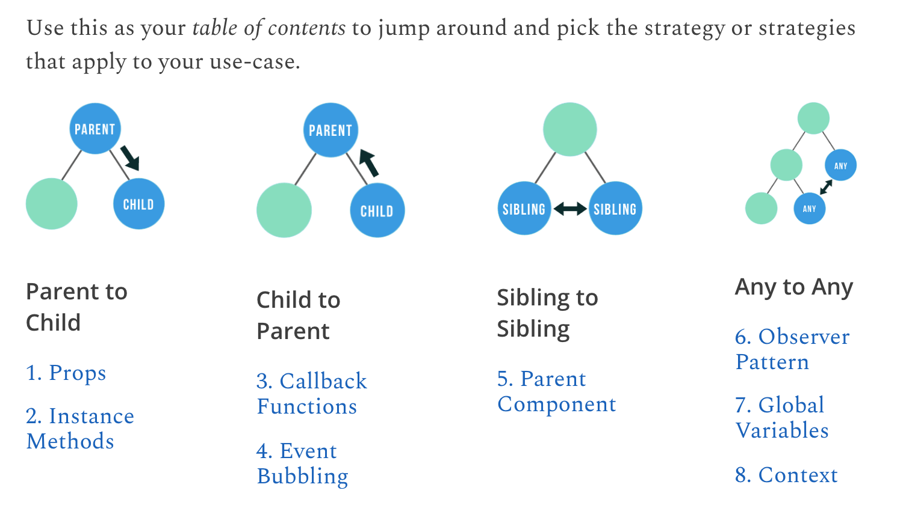

05 - React JS: Using hooks
Introduction
- Class notes: Rules of Hooks
Types of hooks
useState
useReducer
A reducer is a function takes in the current state of an application and an action, and returns a new state. Reducers are often used in conjunction with a state manager library like Redux, which helps manage the state of a React application.
Initialization
useReducer is a hook with the following parameters:
reducer: function that specifies how the state gets updated- It must be pure, should take the state and action as arguments, and should return the next state
- State and action can be of any types
initialArg: value from which the initial state is calculated- It can be a value of any type
- Calculation of the initial state depends on the next
initargument
[optional] init: initializer function that specifies how the initial state is calculated- If not specified, initial state is set to
initialArg - Otherwise, initial state is set to the result of calling
init(initialArg)
- If not specified, initial state is set to
It is very similar to useState but it lets you move the state update logic from event handlers into a single function outside of your component.
Dispatch function
useReducer returns an array with exactly two values:
- The current state: During the first render, it’s set to
init(initialArg)orinitialArg(if there’s noinit) - The
dispatchfunction that lets you update the state to a different value and trigger a re-render- You need to pass the action as the only argument to the
dispatchfunction dispatchfunction doesn’t return anything
- You need to pass the action as the only argument to the
Example 1
Take this useReducer implementation as an example:
useReducer example
import { useReducer } from 'react';
function reducer(state, action) {
if (action.type === 'incremented_age') {
return {
age: state.age + 1
};
}
throw Error('Unknown action.');
};
export default function Counter() {
const [state, dispatch] = useReducer(reducer, { age: 42 });
return (
<>
<button onClick={() => {
dispatch({ type: 'incremented_age' })
}}>
Increment age
</button>
<p>Hello! You are {state.age}.</p>
</>
);
};Let’s analyse it:
reducer: the reducer manages a state object with one field,age- If the
actionreceived isincremented_age, then it update theagevalue of the current state and returns a whole new state (take note of the JSON object returned with theagekey inside) - Else, throw an exception as the received action is unknown to the function
- If the
dispatch: the trigger of theuseReducerhook- It is called upon a button
onClickmethod - A JSON object with a single
typekey is passed to the function; this is theactionthat thereducerreceives along the current state
- It is called upon a button
Example 2
Example 3 - PersonForm
PersonForm.jsx
import { useReducer } from "react";
// First, define an initial state to work it, although it is optional
const initialPerson = { name: "John", surname: "Smith", age: 25};
// Then define the reducer function
function reducer (state, action) {
// Apply the changes in your state based on the provided application
// Usually, the decision making is coded as a switch-cas or if-else conditional
switch (action.type) {
case "increment_age": {
// Always return a new state (JSON object)
return {
name: state.name,
surname: state.surname,
age: state.age + 1
};
}
case "decrement_age": {
// Always return a new state (JSON object)
return {
name: state.name,
surname: state.surname,
age: state.age - 1
};
}
case "change_name": {
// Always return a new state (JSON object)
// New values are included in the "action" parameter
return {
name: action.nextName,
surname: state.surname,
age: state.age
};
}
case "change_surname": {
// Always return a new state (JSON object)
// New values are included in the "action" parameter
return {
name: state.name,
surname: action.nextSurname,
age: state.age
};
}
default: {
throw Error("Unknown action: " + action.type)
}
}
};
// Now define the PersonForm function that will return the render component
export default function PersonForm() {
// Initialize the useReducer hook
const [state, dispatch] = useReducer(reducer, initialPerson);
// Define every "action" function that the reducer will use
// - Function that increments the age of the person (initialPerson.age)
function handleButtonClickIncrement() {
// Invoke the dispatch function with a JSON object that contains the required params --> This will be the "action"
dispatch({
type: "increment_age"
});
};
// - Function that decrements the age of the person (initialPerson.age)
function handleButtonClickDecrement() {
// Invoke the dispatch function with a JSON object that contains the required params --> This will be the "action"
dispatch({
type: "decrement_age"
});
};
// - Function that updates the Name in the form based on the provided value
function handleInputChangeName(e) {
// Invoke the dispatch function with a JSON object that contains the required params --> This will be the "action"
dispatch({
type: "change_name",
nextName: e.target.value
});
};
// - Function that updates the Surname in the form based on the provided value
function handleInputChangeSurname(e) {
// Invoke the dispatch function with a JSON object that contains the required params --> This will be the "action"
dispatch({
type: "change_surname",
nextSurname: e.target.value
});
};
return (
// Start with a fragment (empty tag)
<>
<h2>Person Form - useReduce example</h2>
<hr />
<input value={state.name} onChange={handleInputChangeName}/>
<input value={state.surname} onChange={handleInputChangeSurname}/>
<button onClick={handleButtonClickIncrement}>Increment age</button>
<button onClick={handleButtonClickDecrement}>Decrement age</button>
<p><strong>Name: </strong>{state.name}</p>
<p><strong>Surname: </strong>{state.surname}</p>
<p><strong>Age: </strong>{state.age}</p>
</>
);
}useRef
useEffect
useEffect is a hook that doesn’t depend on its component’s render lifecycle.
Parameters
useEffect accepts two arguments. The second argument is optional.
where:
setup: function with theeffect’s logic- This function may also optionally return a clean-up function (A function that is remembered and launched on the next re-render if dependencies have changed)
- When the component is first added to the DOM, React will run the setup function
- After every re-render with changed dependencies, React will first run the clean-up function (when provided) with the old values, and then run the setup function with the new values
- This means that React remembers the clean-up function and executes it before running the effect again
- Once the component is removed from the DOM, React will run your cleanup function one last time
(optional) dependencies: list of all reactive values referenced inside the setup code- Reactive values include props, state and all the variables and functions declared directly inside your component body
- These are the ones that trigger the
useEffect: when no dependencies are defined, theuseEffectis triggered… - Dependency array properties:
- Optional: if not specified,
useEffectruns after each render - Empty array: then the
useEffectruns once after the initial render
- Optional: if not specified,
Same explanation [from ReactJS docs:]
React calls your setup and cleanup functions whenever it’s necessary, which may happen multiple times:
- Your setup code runs when your component is added to the page (mounts).
- After every re-render of your component where the dependencies have changed:
- First, your cleanup code runs with the old props and state.
- Then, your setup code runs with the new props and state.
- Your cleanup code runs one final time after your component is removed from the page (unmounts).
Example 1
Let’s see an example:
App.js
import { useEffect } from 'react';
import { createConnection } from './chat.js';
function ChatRoom({ roomId }) {
// Define a useState to manage the serverUrl
const [serverUrl, setServerUrl] = useState('https://localhost:1234');
// Define a useEffect to manage connections to the ChatRoom
useEffect(() => {
const connection = createConnection(serverUrl, roomId);
connnection.connect();
// Now define the cleanup code, that will be the responsible of disconnecting when any of the dependencies change
// --> This way we ensure that no connections are left unhandled
return () => {
connection.disconnect();
};
}, [serverUrl, roomId]); // Dependencies are both the serverUrl and roomId
// Do something else...
}where:
setupfunction creates the connection to theserverUrland a specifiedroomIddependencieshere are both theserverUrland theroomId, meaning that if any of them
Example 2
Another example:
import React, { useState, useEffect } from "react";
const App = () => {
// Define a useState to control the message state
const [message, setMessage] = useState("Hi there, how are you?");
// Define a useEffect to change the message value
useEffect(() => {
// Each time a dependency changes, useEffect will launch the setTimeout
// Wait for 6 secs and then change the message
setTimeout(() => {
setMessage("I'm fine, thanks!");
}, 6000);
}, []);
return <h1>{message}</h1>;
};
export default App;Example 3: useEffect with dependencies
Yet another example:
import React, { useState, useEffect } from "react";
const App = () => {
const [message, setMessage] = useState("Message 1: Hi there, how are you?");
const [message2, setMessage2] = useState("This is message 2");
const handleClick = (event) => {
setMessage2("New message 2");
};
useEffect(() => {
console.log("trigger use effect hook");
setTimeout(() => {
setMessage(message2);
}, 6000);
console.log("end of useEffect");
}, [message2]);
return (
<>
<h1>{message}</h1>
<h2>New message: {message2}</h2>
<button onClick={handleClick}>Update message2</button>
</>
);
};
export default App;In this example, the useEffect is called once on component mounting (first render), and also with any change on the message2 state:
- We can change the
message2state any time by clicking on theUpdate message2button:Update message2button callshandleClickhandleClickupdates themessage2state to"New message 2"useEffectsyncs withmessage2and runs again, updating themessagestate to the value ofmessage2
Example 4: combination of useReducer, useEffect and useRef hooks:
Timer.jsx
/*
Timer example: combination of useRef, useReducer, and useEffect
*/
import { useRef, useReducer, useEffect } from "react";
// Define an initialState of the timer
const initialTimerState = {
isRunning: false,
time: 0
}
// Define the reducer function that manages the features of the timer
function reducer(state, action) {
switch (action.type) {
case "start":
// Change the 'isRunning' value to true
// --> This will trigger the useEffect and set an interval task to update the time each second
return {
...state,
isRunning: true
};
case "stop":
// Change the 'isRunning' value to false
// --> This will trigger the useEffect again and clear the previously defined interval
return {
...state,
isRunning: false
};
case "reset":
// Returns the initial state of the timer
// --> This will trigger the useEffect if the isRunning state changes; else, it won't need
return initialTimerState;
case "tick":
// Returns the updated state.time value
// --> This WON'T trigger the useEffect as the isRunning value won't change
return {
...state,
time: state.time + 1
};
default:
// Throw an error for any unexpected value
throw new Error();
}
}
// Define the Timer main function
export default function Timer() {
// First off, initialize a timer state and its reducer function
// --> The reducer will be the previously defined function that will manage the behaviour of the Timer
// --> We also provide the desired initialTimerState
const [state, dispatch] = useReducer(reducer, initialTimerState);
// Then, define a reference value (idRef) using the `useRef` hook to handle the time value update
const idRef = useRef(0);
// Define the useEffect hook that updates the lifecycle of the timer
useEffect(() => {
// if 'state.isRunning' changes to false, there's no need to do anything. Reasons:
// --> The cleanup code from the "start" business logic already clears the "setInterval"
// --> The return here only serves to avoid executing the rest of the code
if (!state.isRunning) {
//
return;
};
// Set the idRef current value to the initialization of a new interval
// --> This interval is the responsible of calling the useReducer hook with the 'tick' action type
console.log("Starting Timer");
idRef.current = setInterval(
() => dispatch(
{
type: "tick"
}), 1000); // Set the interval value to 1 sec
// Define the CLEANUP code that runs on re-rendering when dependencies have changed
// --> This function is stored in memory and when executed it uses the old props and state
return () => {
console.log("Stopping Timer");
console.log(idRef.current);
clearInterval(idRef.current);
idRef.current = 0;
console.log(idRef.current);
}
}, [state.isRunning]); // useEffect will only run once on component creation/mount and each time the value of 'state.isRunning' changes
// Return the HTML snippet
// https://www.w3schools.com/colors/colors_shades.asp
return (
<div style={{ backgroundColor: "#D0D0D0", padding: "12px" }}>
<h2>Timer - combination of useEffect (with cleanup code), useReducer and useState hooks </h2>
<div
style={{
backgroundColor: "#F0F0F0",
boxShadow: "0 4px 20px 0 rgba(0,0,0,0.8)",
transition: "0.3s",
width: "40%",
borderRadius: "5px",
padding: "12px",
textAlign: "center",
fontSize: "20px"
}}
>
{/* 'state.time' is the only state value that changes without user intervention and will trigger a re-render of this component by itself */}
{state.time}s
</div>
<br />
<div style={{ display: "flex" }}>
<button
style={{ margin: "8px" }}
onClick={() => dispatch({ type: "start" })}
>
Start
</button>
<button
style={{ margin: "8px" }}
onClick={() => dispatch({ type: "stop" })}
>
Stop
</button>
<button
style={{ margin: "8px" }}
onClick={() => dispatch({ type: "reset" })}
>
Reset
</button>
</div>
</div>
);
}
Synchronizing with Effects
The question is not ‘when does this effect run’, the question is ‘with which state does this effect synchronize’ - Ryan Florence
useContext
useContext?
useContext is a React Hook that lets you read and subscribe to context from your component.
useContext allows you to consume context values from a nearest ancestor Context.Provider. Here’s a brief overview of the three steps to use useContext:
- Create a context: to use
useContext, you must first create a context using theReact.createContextfunction
- This function takes in a default value for the context, which will be used if a
Context.Provideris not present in the component tree
- Provide the context value: to make the context value available to your components, you need to wrap your component tree with a
Context.Providercomponent, and pass the context value as a prop - Consume the context value: to consume the context value in a component, you can use the
useContexthook and pass in the context object as an argument
- The hook will return the current context value, which you can then use in your component

Usage of useContext
Problem
The big issue that comes up is figuring out how components should communicate with each other.

Solution: context
Context works similarly to props, but instead of providing data to a single child, it can be used to provide data to an entire subtree.
Context can only send data down the tree (parent ot subtree). It can be paired with callback functions to pass data back up.
Examples:
Basic example
In this example, the MyContext context component is created using the React.createContext function, with a default value of default value. The MyComponent component consumes the context value using the useContext hook, and displays the value in the DOM:
useContext basic example
// Initialize a context component
const MyContext = React.createContext("default value");
// Define a function that will use that context by invoking the `useContext` hook
function MyComponent() {
const value = useContext(MyContext);
return <div>{value}</div>;
}
// Main function
function App() {
// The main function consumes the context provider by accessing its previously created component
return (
// Pass "Hello, world!" to the context component as a prop
<MyContext.Provider value="Hello, world!">
{/* The child component now has access to the MyContext component */}
<MyComponent />
</MyContext.Provider>
);
}What’s going on here?
- The
Appcomponent wraps theMyComponentcomponent with aMyContext.Providercomponent, and passes the value"Hello, world!"as a prop - This makes the context value available to the
MyComponentcomponent, which will use the value passed by the provider rather than the default value